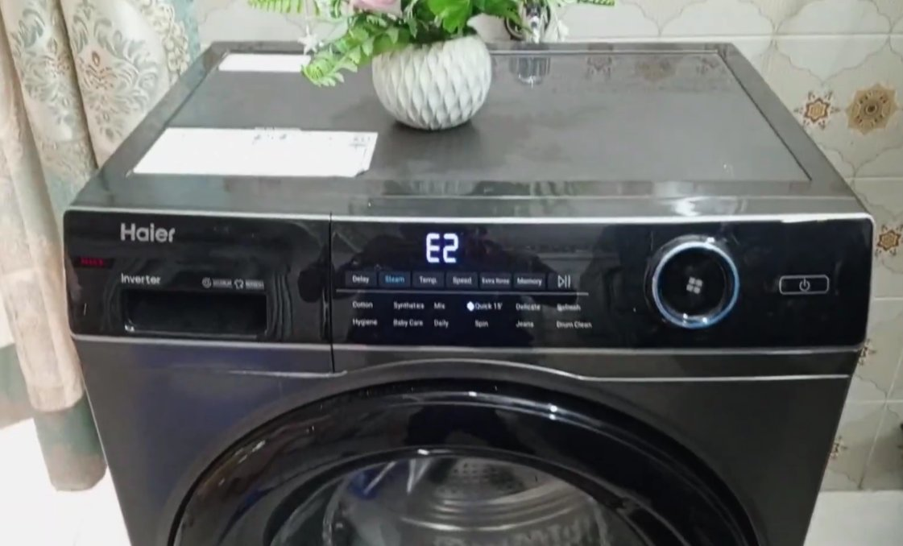
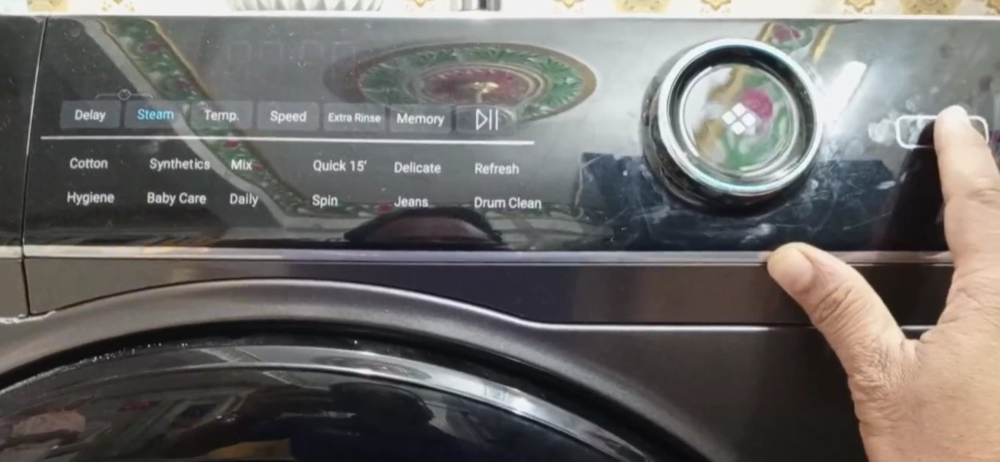
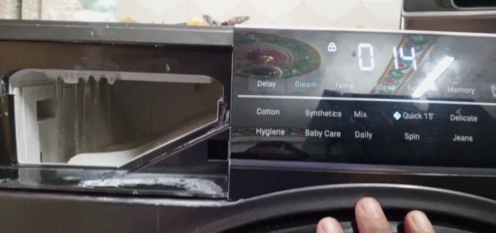

What E4 Means on a Godrej Washing Machine
My aunt called me on a Sunday morning — of course it was a Sunday — because her Godrej front-loader had stopped mid-cycle with E4 blinking on the display and a drum full of wet clothes going nowhere. She'd already tried switching it off and on twice. Still E4.
Took me about 25 minutes at her place to figure it out and clear it. The cause was something I wouldn't have guessed immediately, and it's different from what a lot of the generic troubleshooting guides online will tell you.
Here's what E4 means across the range:
- Most Godrej front-loaders (WF series and similar): E4 indicates a water drainage problem — the machine tried to drain after a wash or rinse cycle, didn't detect the water level dropping correctly, and stopped.
- Some Godrej top-load models: E4 points to an unbalanced load — the drum detected unevenly distributed laundry and stopped spin to prevent the machine from shaking itself apart.
- A smaller number of models: E4 indicates a water inlet issue — not enough water coming in during the fill phase.
Check the model sticker on the inside of your door (front-loaders) or back panel (top-loaders) if you want to confirm. But in practice, the symptom is the fastest guide to which fix you need.
Fix 1: The Drainage Problem (Most Common)
This is what my aunt had. The machine had filled and washed normally, but when it tried to drain before the spin, the water just sat there. E4, stopped dead.
Why drainage fails on Godrej front-loaders: The drain pump filter — also called the coin trap or debris filter — is clogged. It's a small filter at the bottom front of the machine, usually behind a small rectangular flap near the floor. Over time it collects lint, hair, small coins, buttons, safety pins, and whatever else comes out of pockets.
My aunt's filter had a safety pin, some hair, and what appeared to be a very small Ganesh idol that had been in a kurta pocket. The machine had been struggling for weeks — it just finally gave up that Sunday morning.
The drain hose can also be the problem — kinked, blocked, or positioned too high. The hose needs to drain into a standpipe or outlet not positioned higher than about 100cm from the floor. If it's pushed too far into the drain pipe or bent sharply behind the machine, water can't flow out properly.

There will be water. Always more than you expect. Before touching anything:
- Lay old towels on the floor in front of the machine.
- Get a shallow tray or baking dish — something that can hold at least 500ml.
- Switch the machine off using the power button (do not unplug yet).
- Look at the bottom front of the machine — usually bottom right — for a small rectangular panel or flap. It may unclip, pop open with a fingernail, or have a small screw.
- Inside you'll see a small drain hose with a clip or cap, and a larger round filter cap.
- Pull out the small emergency drain hose, unclip or uncap the end, and hold it over your tray. Let all the water drain out — this can take a minute or two.
- Once the tray fills, tip it and repeat until the flow stops.
- Once the water has drained, slowly unscrew the filter cap anti-clockwise. More water will come out — have the towels ready.
- Pull the filter out completely.
- Clean it under a running tap. Hair wraps around the filter and needs to be pulled off rather than rinsed — pinch it and pull.
- Use a torch to look inside the filter housing for anything left behind — coins, pins, and fabric scraps often sit in the cavity.
- Replace the filter and screw the cap back clockwise until snug. Don't overtighten — the cap is plastic.
- Close the small drain hose, replace its cap, and close the access flap.
- Pull the machine slightly away from the wall and check the drain hose along its full length.
- Look for any kinks, sharp bends, or squashing where the machine has been pushed against the wall.
- Confirm the end of the hose goes into the standpipe or drain at a height no more than 100cm from the floor.
- Make sure the hose isn't pushed too deep into the standpipe — it should sit in loosely, not jammed in. Over-insertion creates a siphon effect that stops water from draining.
For my aunt, cleaning the filter was all it took. Machine drained normally, E4 gone, wet clothes into the spin cycle, Sunday saved.
Fix 2: The Unbalanced Load Issue (Top-Loaders and Some Front-Loaders)
If your machine is a top-loader, or if you're getting E4 during the spin cycle specifically — not during drain — this is more likely your situation.
The drum tries to spin up to speed and detects that the laundry is all sitting on one side, creating vibration that would damage the machine if it continued. So it stops. This happens most often when washing one large heavy item without anything else to balance it, when the load is too small overall, or when someone opened the machine mid-cycle without redistributing properly.

- Open the machine (on front-loaders, first run a Drain cycle if water is present).
- Manually redistribute the laundry so it's spread evenly around the drum — not bunched on one side.
- If you're washing a single heavy item like a bedsheet, add a couple of towels to help balance the weight.
- Close the door and restart the spin cycle.
If E4 keeps returning even with a balanced load, check that the machine is level. Use a spirit level on top of the machine — all four feet should make firm contact with the floor.
To adjust the feet: Godrej washing machines have adjustable levelling feet. Turn them clockwise to raise a corner, anti-clockwise to lower it. Re-check the spirit level after each adjustment.
Fix 3: The Water Inlet Issue
Less common for E4 specifically, but if your machine is stopping in the first few minutes of a cycle — before it's even properly filled — and showing E4, the inlet might be the issue.
- Check the tap that feeds the machine — confirm it's fully open and water is flowing at reasonable pressure.
- Water pressure in many Indian cities fluctuates significantly through the day. If E4 appears consistently at certain times, low municipal pressure may be the cause rather than a machine fault.
- Locate the inlet hose filter — a small mesh filter where the hose connects to the back of the machine. Turn off the tap, unscrew the hose, and pull out the mesh filter with a pin or tweezers.
- Rinse the filter under a tap to clear accumulated grit and mineral deposits. Replace and reconnect the hose, turn the tap back on.

If You've Fixed the Cause but E4 Won't Clear
Sometimes the error code sticks on the display even after you've fixed whatever caused it. The machine needs a proper reset.
- Switch the machine off using the power button.
- Unplug it from the wall socket.
- Wait a full 5 minutes — not 30 seconds. A proper 5-minute power drain lets the control board reset completely.
- Plug it back in, switch it on, and run a short cycle.
If E4 still shows after a confirmed fix and a proper 5-minute reset, the control board may have logged the error in a way that needs a technician to clear with a service tool. This is uncommon on newer models but does happen on older Godrej machines.
When to Call Godrej Service
If you've cleaned the filter, checked the hose, reset the machine, and E4 still comes back — call a technician rather than chasing it further yourself. The possibilities at that point are a failed drain pump, a faulty water level sensor (pressure switch), or a control board issue. None of those are DIY fixes.
- Machine makes a humming or buzzing sound but won't drain — the drain pump motor is running but blocked or failing.
- E4 returns immediately after every wash — the issue is ongoing, not a one-off clog. Something structural needs looking at.
- E4 won't clear from the display after a confirmed fix and reset — the error log needs a service tool to clear.
- Your machine is still under warranty — don't do further disassembly; contact Godrej first to avoid voiding coverage.
Godrej's customer care number is 1800-209-5511 — toll-free, and they'll log a service request directly. Technician visits for error codes are usually ₹300–500 for the visit, with parts extra if something needs replacing. A drain pump replacement on a Godrej front-loader typically comes to ₹1,200–1,800 including labour.
If your machine is under warranty — Godrej typically gives 2 years comprehensive and up to 10 years on the motor — the visit and parts for a manufacturing defect should be covered. Keep your purchase invoice and warranty card accessible before calling.
Quick Answers
| Symptom | Likely Cause | First Fix |
|---|---|---|
| E4 mid-cycle, water still in drum | Clogged drain filter | Clean debris filter (Fix 1) |
| E4 during spin, not drain | Unbalanced load | Redistribute laundry (Fix 2) |
| E4 in first few minutes, before full fill | Inlet issue or low pressure | Check tap & inlet filter (Fix 3) |
| Filter clean, E4 gone, came back in a few washes | Filter needs regular cleaning | Clean monthly; check pocket items |
| Humming sound, no drain | Pump blocked or failed | Call Godrej — 1800-209-5511 |
| E4 won't clear from display after fix | Control board error log | 5-min unplug reset (Fix 7) |
E4 on a Godrej washing machine is fixable at home in most cases — the drain filter being the culprit far more often than anything else. Five minutes of cleaning and you're usually back in business. Just remember the towels. Seriously, the water is always more than you expect.